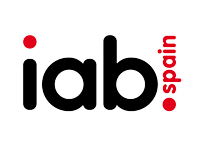

¡ Hola ! Soy Kendry...
Ingeniero en Informática graduado con honores en la Universidad Nacional Experimental Rafael María Baralt con más de 10 certificados en areas de informática y diseño web.
Vivo en San Francisco, Estado Zulia [Venezuela] y me dedico a diseñar y crear sitios web desde hace 4 años.
Me gusta diseñar sitios orientados a la simplicidad y experiencia de usuario siguiendo practicas recomendada por expertos y estándares dictados por la W3C.
Nota de Interes...
El Consorcio World Wide Web (W3C) es una comunidad internacional donde las organizaciones Miembro, personal a tiempo completo y el público en general trabajan conjuntamente para desarrollar estándares Web. la misión del W3C es guiar la Web hacia su máximo potencial.
Por ello siempre diseño bajo esos estandares y gracias a eso mis sitios web siempre obtienen las mejores puntucianes al evaluarlo con herramientas online que miden la velocidad, usabilidad, escalabilidad y experiencia de usuarios.
Mis diseño los enfoco en las necesidades de los usuarios, y trabajo hasta el mas minimo detalle para que cumpla con las siguientes caracteristicas:
Adaptables
Para que se pueda visualizar de manera optima en cualquier dispositivo sin perder calidad ni velocidad.
Optimizadas
Gracias a herramientas online que ponen a prueba el sitio web.
Usables
Accesible para todos, siguiendo estandares y certificaciones de la W3C.
Habilidades y Escuelas en las que me he formado
- 
Proyectos
Diseño web para la Escuela Guanipa Matos
Este proyecto lo realice en mi segundo año de mi carrera universitaria, y lo realice junto a tres colegas de la Universidad
Consistia en darle presencia digital a la escuela, esto como parte de mi proyecto comunitario.
Diseño web para el Frente Estudiantil de la UNERMB
Este proyecto lo realice junto a tres colegas de la Universidad, consistia en realizar un sitio web para el Frente Estudiantil Universatirio José Felix Rivas de la Universidad Nacional Experimental Rafael María Baralt
con el objetivo de que pudiesen comunicar a la comunidad escolar acerca de las actividades y eventos que se realizarian en la Universidad.
Creación de presencia digital para empresario independiente de FUXION
Este proyecto lo realice junto a mi colega Kilderni Villasmin y lo hicimos con el fin de darle presencia digital al empresario independiente Rolando Boscan.
realizamos: creación de Redes Sociales, banner Publicitarios, y administracion de sitio web con WordPress